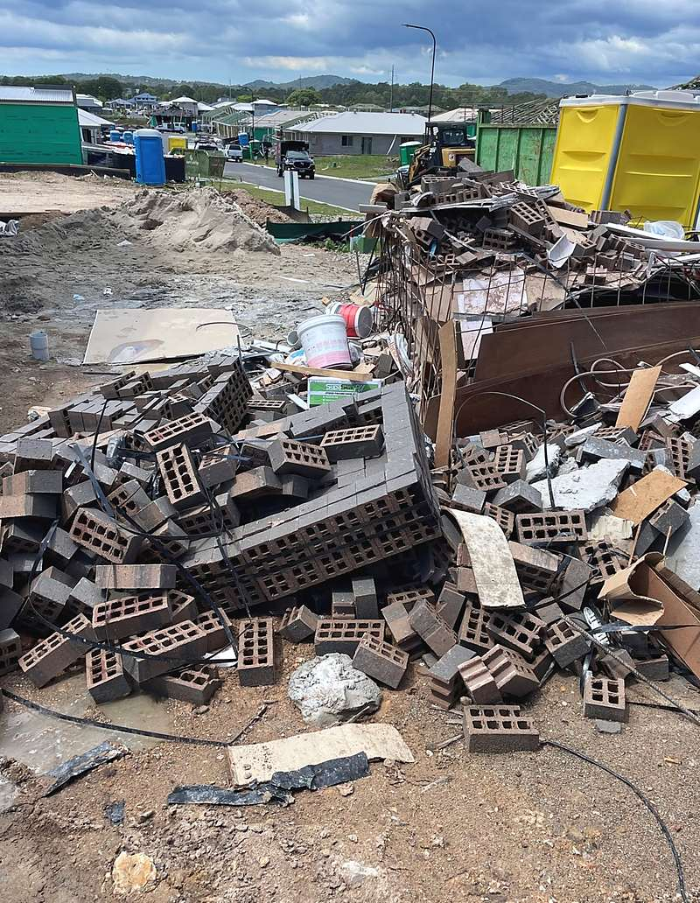
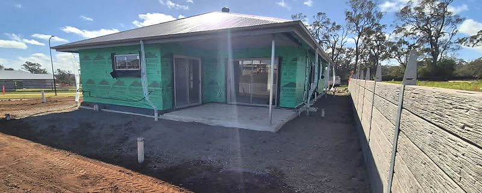
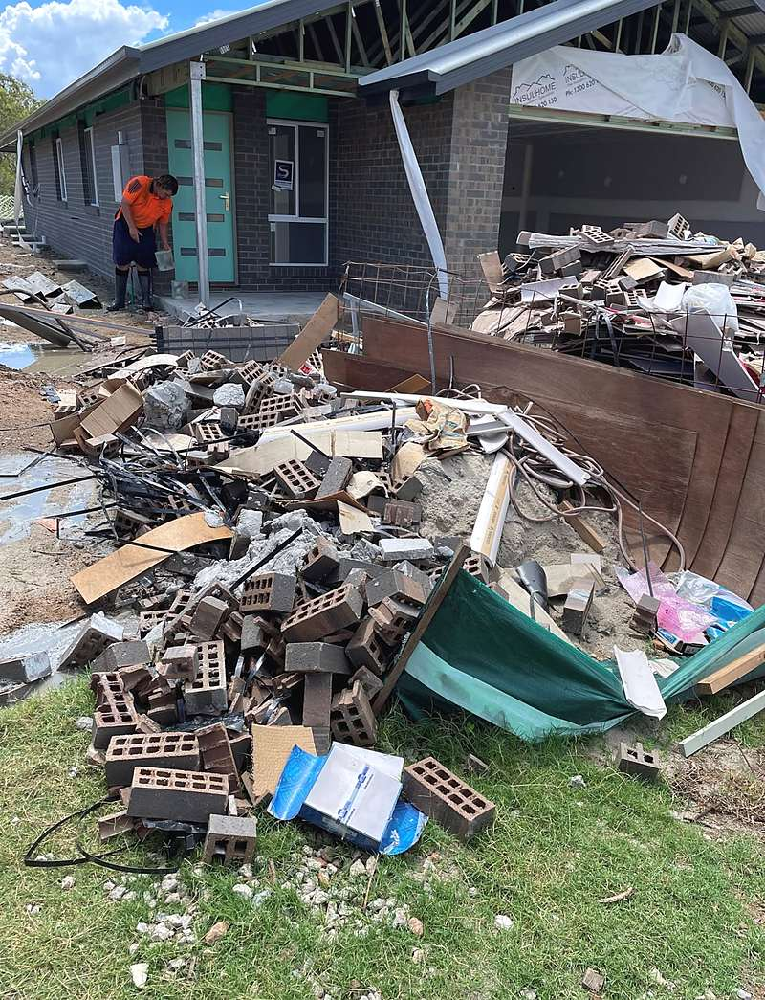
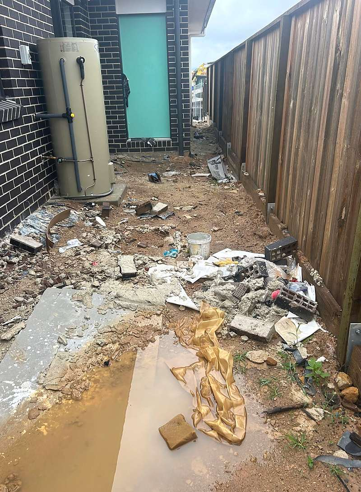
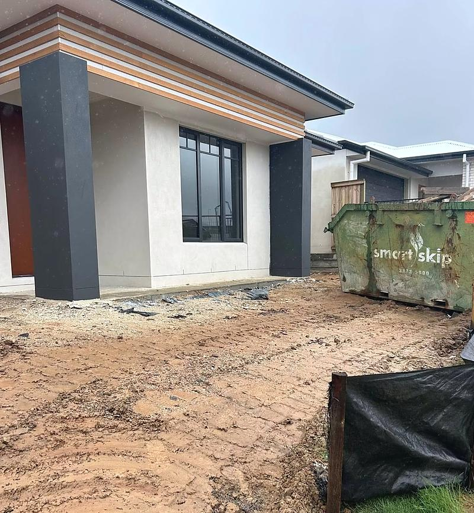
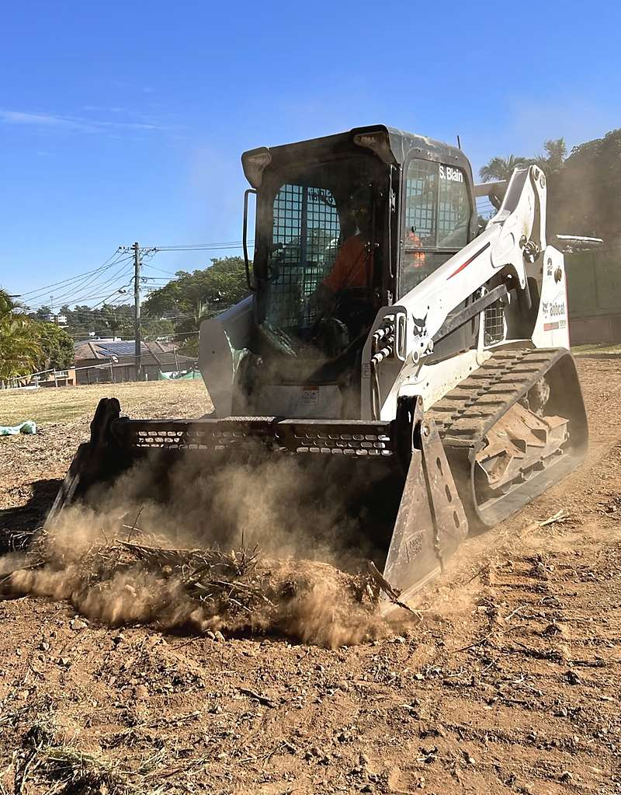
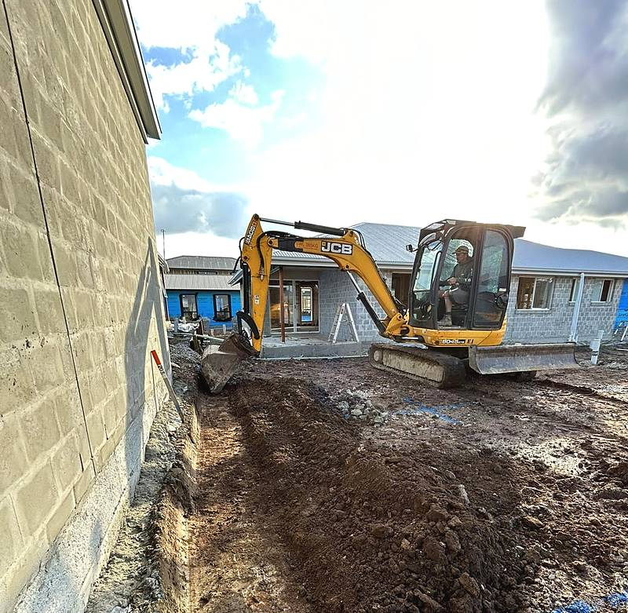
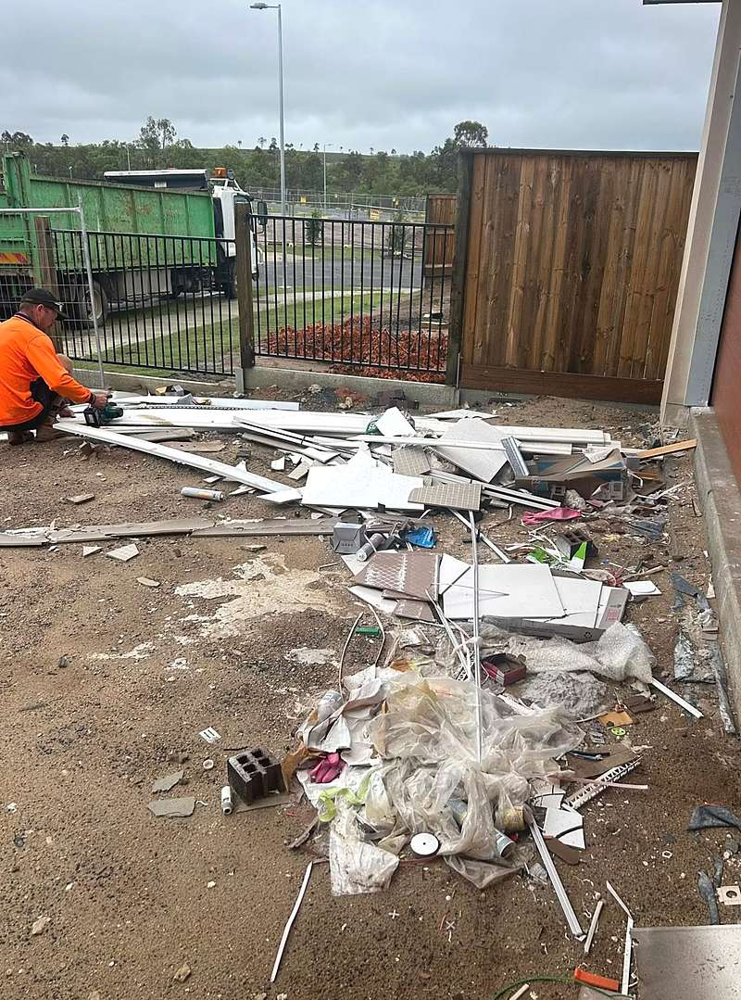

Spoil removal
Load and cart spoil from house sites. Priced per cubic metre.

Spoil and waste off the lot. Base and crossovers in. Trenches, screw piers, small excavation, plant with an operator, and the cleans builders call for.
Load and cart spoil from house sites. Priced per cubic metre.

Clean the slab and back-blade the site around it.

Supply and spread road base for site access and crossovers.

Scaffold clean on house sites.
Roof clean on house sites.
Final clean-up of the house site for the builder.

Load and remove rubbish and site waste.

Trench digging on house sites.

Screw pier installation for house sites, with our own plant.
Small excavation and earthmoving on house sites.

A 5t excavator and skid steers. Both come with an operator.


Cartage in MR and HR tipper trucks for spoil, road base and site waste.

Call it up with the lot, the PO and when the site is free. Or register us before the next stage.